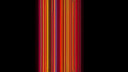
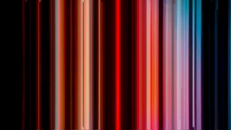

original video
Final output
- effect uses copper list to set the colour 0 (bg)
- original netflix logo animation is vertical, but this is a bit limiting on Amiga hardware (we'd be stuck at 4px or 8px wide bars)
- we take netflix logo video from youtube, convert to 256px wide png frames, and interpolate to double the frame rate (source 96 frames at 25 fps):

- using Python and PIL library we extract the pixel information on a row near the bottom of the frames (we don't want the 'N', just the colours)
- we then encode the bars as copper instructions: WAIT for start of horizontal position (y), then MOVE the 12bit colour equivalent of the 24bit source COLOR00 register (i.e we set the background colour)
- this obviously only generates a copper list for each frame, so we repeat this for each interpolated frame
- we then set up the copper to jump to a specific frame to create the animation in our main loop
- the copper instructions for the full animaton take up about 32950 bytes of chip (~ equivalent of a 320x256x3bp image), we store the copper offsets (to the 191 frames) in fast/slow ram